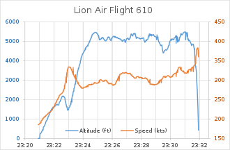

| Date | 29 Octobre 2018 | |||||||||||||||||||||||
|---|---|---|---|---|---|---|---|---|---|---|---|---|---|---|---|---|---|---|---|---|---|---|---|---|
| Cause | Défauts de con conception du système MCAS (Maneuvering Characteristics Augmentation System) | |||||||||||||||||||||||
| Lieu d'origine | Aeroport International Soekarno-Hatta de Tangerang, Indonésie | |||||||||||||||||||||||
| Lieu de destination | Aeroport Depati Amir Pangkal Pinang, Indonésie | |||||||||||||||||||||||
| Site du crash | Mer de Java donésie 5°46′15″S 107°07′16″E |
| Type d'appareil | Boeing 737 Max 8 |
|---|---|
| Numero de vol IATA | JT610 |
| Vol OACI | LNI610 |
| Signe d'appel | LION INTER 610 |
| Immatriculation | PK-LQP |
| Occupants | 189 |
| Passagers | 181 |
| Equipage | 8 |
| Décès | 189 |
| Survivants | 0 |
L'avion impliqué était un Boeing 737 Max 8, immatriculé PK-LQP, numéro de ligne 7058, propulsé par deux moteurs LEAP de CFM International. L'avion a été loué auprès de China Minsheng Investment Group (CMIG) Aviation Capital. Il a éffectué son premier vol le 30 Juillet 2018 et a été livré neuf à LionAir le 13 Août 2018. Au moment du crash, l'avion avait environ 800 heures à son actif. Il s'agissait du premier accident impliquant un 737 Max dépuis la mise en service du type le 22 Mai 2017. Cet accident fut le plus meurtrier impliquant un Boeing 737.
L'équipage était constitué de deux pilotes et six Personnel Navigant Commercial (PNC). Le commandant de bord était le capitaine Bhavye Suneja (31 ans), ressortissant indien, il avait volé avec la compagnie pendant plus de sept ans et comptait 6028 heures d'experience à son compteur dont 5176 heures sur Boeing 737. Il a recu sa formation en Californie. Quant au Co-pilote indonesien Harvino, il comptabilisais 5174 heures d'experience de vol dont 4286 sur Boeing 737. Les six agents de bord etaient tous indonésiens.
L'avion a decollé de Jakarta le 29 Octobre 2018 à 06h20 heure locale (28 Octobre 2018 23h20 GMT) et devait atteindre sa destination à 07h20 heure locale au large dans une direction Ouest avant de touner autour d'un cap Nord-Est qu'il a tenu tenu jusqu'à ce qu'il s'écrase au Nord-Est de Jakarta dans des eaux d'environ 35m de profondeur (115 pieds).
La communication entre le contrôle du trafic aérien (ATC) et le vol 610 a été soudainement perdue à 6h33 L'ATC a informé l' Agence nationale de recherche et de sauvetage, qui a déployé trois navires et un hélicoptère dans la zone. À 7 h 30, l'agence a reçu des rapports selon lesquels le vol 610 s'était écrasé à quelques kilomètres d'une plate-forme pétrolière offshore . Les travailleurs sur la plate-forme auraient vu l'avion s'écraser avec un angle de piqué prononcé. Les bateaux de la plate-forme ont été immédiatement déployés et des débris de l'avion écrasé ont été retrouvés peu de temps après.
| Trajectoire du vol JT610 |
|---|
Les enregistreurs de vol de l'avion Lion Air ont été récupérés avec l'aide du Bureau d'enquête sur la sécurité des transports (TSIB) de Singapour, qui a envoyé le 29 octobre 2018, trois spécialistes et un détecteur de balise de localisation sous-marine pour aider à récupérer les appareils. Le Bureau australien de la sécurité des transports a envoyé deux de ses employés pour aider le Comité national indonésien de la sécurité des transports (NTSC) dans le processus de téléchargement du FDR. Une équipe d'ingénieurs du NTSB et un technicien de Boeing sont arrivés en Indonésie pour participer à l'enquête sur l'accident de Lion Air le 31 octobre 2018, deux jours après l'équipe singapourienne.
L'avion a été utilisé sur un vol de l'aéroport international Ngurah Rai de Bali à l'aéroport international Soekarno-Hatta de Jakarta la nuit précédant l'accident. Des rapports détaillés de ce vol ont révélé que l'avion avait subi un grave incident, qui a traumatisé de nombreux passagers. Les passagers dans la cabine ont signalé de fortes secousses et une odeur de caoutchouc brûlé à l'intérieur de la cabine. À un moment donné, l'avion avait chuté de plus de 61 m (200 pieds) en quelques secondes. Le panneau de ceinture de sécurité n'a jamais été éteint du décollage à l'atterrissage. Un enregistrement des communications du contrôle de la circulation aérienne indiquait que le pilote avait annoncé un « pan-pan ». L'équipage a décidé plus tard d'annuler le pan-pan et de continuer le vol vers Jakarta.
Le carnet de maintenance de l'avion a révélé que l'avion avait subi une panne de navigation non précisée du côté du commandant de bord, tandis que le côté du copilote était signalé comme étant en bon état.
Les passagers ont raconté que l'avion avait subi un problème de moteur et qu'on leur avait dit de ne pas monter à bord car les ingénieurs tentaient de résoudre le problème. Alors que l'avion était en route vers Jakarta, il avait du mal à maintenir une altitude constante, les passagers déclarant que c'était comme "un tour de montagnes russes". Le directeur général de Lion Air, Edward Sirait, a déclaré que l'avion avait un "problème technique" dimanche soir, mais que celui-ci avait été résolu conformément aux manuels de maintenance publiés par le constructeur. Les ingénieurs avaient déclaré que l'avion était prêt à décoller le matin de l'accident. Des informations sont apparues plus tard selon lesquelles un troisième pilote était sur le vol vers Jakarta et a dit à l'équipage de couper l'alimentation électrique des moteurs de compensation du stabilisateur. Cette méthode est un élément de mémoire standard dans la liste de contrôle du 737 et, sur ce vol, elle a résolu le problème. Par la suite, le Comité national de la sécurité des transports a confirmé la présence d'un pilote qualifié de Boeing 737 MAX 8 hors service dans le poste de pilotage, mais n'a pas confirmé le rôle de cette personne dans la résolution du problème et a nié qu'il y ait eu un enregistrement du vol précédent dans l'enregistreur vocal du cockpit du vol 610 de Lion Air.
La nature erratique de la trajectoire de vol a conduit l'expert indonésien en aviation Gerry Soejatman à supposer que les tubes de Putot , utilisés dans le système d'indication de vitesse anémométrique, pourraient avoir joué un rôle dans l'accident. Ils ont contribué aux accidents précédents.
L'Agence indonésienne de météorologie, de climatologie et de géophysique (BMKG) a signalé que le temps était clair au moment de l'accident, avec des vents à 9,3 km/h (5 nœuds) du nord-ouest. La visibilité était bonne sans cumulonimbus. Le chef de l'hôpital de la police, Musyafak, a déclaré qu'un examen des parties du corps indiquait qu'il était peu probable qu'il y ait eu une explosion ou un incendie à bord de l'avion.
Les experts de l'aviation ont noté qu'il y avait des anomalies dans l'altitude et la vitesse du vol 610. À peine trois minutes après le début du vol, le commandant de bord a demandé au contrôleur la permission de retourner à l'aéroport car il y avait des problèmes de contrôle de vol. Environ huit minutes après le début du vol, les données transmises automatiquement par l'avion ont montré qu'il était descendu à environ 1 500 m (5 000 pieds) mais que son altitude continuait de fluctuer. La valeur moyenne des données de vitesse transmises par le vol 610 était d'environ 300 nœuds (560 km / h; 350 mph), ce qui a été considéré par les experts comme inhabituel, car généralement les aéronefs à des altitudes inférieures à 3000 m (10000 pieds) sont limités à une vitesse de 250 nœuds (460 km / h; 290 mph). Dix minutes après le début du vol, les données ont enregistré la chute de l'avion de plus de 910 m (3 000 pieds). La dernière altitude enregistrée de l'avion était de 760 m (2 500 pieds).
| Altitude et Vitesse du vol JT610 |
|---|
Le 5 novembre, le NTSC a annoncé que le vol 610 était toujours intact lorsqu'il s'est écrasé en mer à grande vitesse, citant la taille relativement petite des débris. L'impact a été si puissant que la partie la plus solide de l'avion a été anéantie. Le NTSC a également déclaré que les moteurs du vol 610 fonctionnaient encore lorsqu'il s'est écrasé dans la mer, indiqué par le régime élevé. Un examen plus approfondi des instruments de l'avion a révélé que l'un des anémomètres de l'avion avait mal fonctionné lors de ses quatre derniers vols, y compris le vol vers Denpasar.
Le 7 novembre, le NTSC a confirmé qu'il y avait eu des problèmes avec les capteurs d' angle d'attaque (AoA) du vol 610. Pensant que cela résoudrait le problème, les ingénieurs de Bali ont alors remplacé l'un des capteurs AoA de l'avion, mais le problème a persisté sur l'avant-dernier vol, de Denpasar à Jakarta. Quelques minutes après le décollage, l'avion plonge brusquement. L'équipage de ce vol, cependant, avait réussi à contrôler l'avion et avait décidé de voler à une altitude inférieure à la normale. Ils ont ensuite réussi à faire atterrir l'avion en toute sécurité et ont enregistré une différence de vingt degrés entre les lectures du capteur d'angle d'attaque (AoA) gauche et du capteur droit. Le chef du NTSC, Soerjanto Tjahjono, a déclaré à la presse que les futurs rapports ou actions, adoptés pour prévenir des problèmes similaires sur des avions similaires, seraient décidés par Boeing et les autorités aéronautiques américaines.
Le 28 novembre, les enquêteurs indonésiens ont déclaré que l'avion Lion Air n'était pas en état de navigabilité lors du vol avant l'accident. Plusieurs proches des victimes de l'accident ont intenté des poursuites contre Boeing.
Le 28 novembre, le Comité national indonésien de la sécurité des transports (NTSC) a publié son rapport d'enquête préliminaire sur l'accident. Après des problèmes de vitesse et d'altitude, un capteur AoA a été remplacé et testé deux jours plus tôt sur l'avion accidenté. Des indications de vitesse anémométrique erronées étaient toujours présentes lors du vol suivant le 28 octobre, qui a subi une compensation automatique de piqué . La liste de vérifications anormales du stabilisateur à la dérive a été exécutée, le compensateur électrique du stabilisateur a été désactivé et le vol s'est poursuivi avec le compensateur manuel; les problèmes ont été signalés après l'atterrissage. Peu de temps après le décollage du 29 octobre, des problèmes d'altitude et de vitesse ont persisté en raison de données AoA erronées et d'une compensation de piqué automatique commandée via le système d'augmentation des caractéristiques de manœuvre (MCAS). L'équipage de conduite a commandé à plusieurs reprises le compensateur à cabrer au cours des dix dernières minutes du vol. Le rapport préliminaire n'indiquait pas si la procédure de compensation d'emballement du stabilisateur avait été exécutée ou si les interrupteurs électriques de compensation du stabilisateur avaient été coupés lors du vol de l'accident.
Leeham News, qui couvre principalement les problèmes d' Airbus, de Boeing, de Bombardier et d' Embraer, a rapporté que l'équipage ne savait pas clairement que la liste de contrôle d'emballement de trim désengagerait le MCAS.
Boeing a souligné le succès du dépannage effectué le 28 octobre comme preuve que le MCAS n'a pas modifié les procédures d'emballement du stabilisateur et a souligné l'existence de longue date de procédures pour annuler les commandes de piqué du MCAS.
L' enregistreur vocal du poste de pilotage (CVR) a été retrouvé le 14 janvier 2019. Le 21 janvier 2019, le NTSC a annoncé qu'il ne publierait pas la transcription de l'enregistreur vocal du poste de pilotage avant la publication du rapport final. À la suite de l'accident du vol 302 d'Ethiopian Airlines le 10 mars 2019, les données du CVR du vol 610 de Lion Air ont toutefois été partagées entre les enquêteurs ; des médias citant des sources anonymes ont rapporté que CVR a enregistré les pilotes mentionnant plusieurs problèmes, essayant de grimper et consultant le manuel de référence rapide pour trouver une solution. NTSC a nié ces affirmations, mais a déclaré que les pilotes avaient commencé à paniquer à la fin du vol.
Le NTSC a publié son rapport final sur l'accident le 25 octobre 2019. Le rapport énumère neuf « facteurs contributifs » :
Les facteurs contributifs sont définis comme des actions, des omissions, des événements, des conditions ou une combinaison de ceux-ci qui, s'ils étaient éliminés, évités ou absents, auraient réduit la probabilité que l'accident ou l'incident se produise, ou atténué la gravité des conséquences de l'accident ou de l'incident . La présentation est basée sur l'ordre chronologique et non sur le degré de contribution.
1. Lors de la conception et de la certification du Boeing 737-8 (MAX), des hypothèses ont été émises sur la réponse de l'équipage de conduite aux dysfonctionnements qui, même si elles étaient conformes aux directives actuelles de l'industrie, se sont révélées incorrectes.
2. Sur la base des hypothèses incorrectes concernant la réponse de l'équipage de conduite et d'un examen incomplet des multiples effets associés du poste de pilotage, le recours du MCAS à un seul capteur a été jugé approprié et a satisfait à toutes les exigences de certification.
3. Le MCAS a été conçu pour s'appuyer sur un seul capteur AOA, ce qui le rend vulnérable aux entrées erronées de ce capteur.
4. L'absence de directives sur le MCAS ou l'utilisation plus détaillée du compensateur dans les manuels de vol et dans la formation des équipages de conduite a rendu plus difficile pour les équipages de conduite de répondre correctement à un MCAS non commandé.
5. L'alerte AOA DISAGREE n'a pas été correctement activée lors du développement du Boeing 737-8 (MAX). Par conséquent, il n'est pas apparu pendant le vol avec le capteur AOA mal calibré, n'a pas pu être documenté par l'équipage de conduite et n'était donc pas disponible pour aider la maintenance à identifier le capteur AOA mal calibré.
6. Le capteur AOA de remplacement installé sur l'avion accidenté avait été mal calibré lors d'une réparation antérieure. Ce défaut d'étalonnage n'a pas été détecté lors de la réparation.
7. L'enquête n'a pas permis de déterminer si le test d'installation du capteur AOA a été effectué correctement. Le défaut d'étalonnage n'a pas été détecté.
8. Le manque de documentation dans le carnet de vol et de maintenance de l'avion concernant le vibreur de manche continu et l'utilisation du stabilisateur Runaway NNC signifiait que l'équipe de maintenance à Jakarta n'avait pas accès aux informations ni à l'équipage de l'accident, ce qui rendait plus difficile pour à chacun de prendre les mesures appropriées.
9. Les multiples alertes, les activations répétitives du MCAS et les distractions liées aux nombreuses communications ATC n'ont pas pu être gérées efficacement. Cela a été causé par la difficulté de la situation et les performances en matière de manipulation manuelle, d'exécution NNC et de communication avec l'équipage de conduite, ce qui a entraîné une application CRM et une gestion de la charge de travail inefficaces. Ces performances avaient été préalablement identifiées lors de l'entraînement et sont réapparues lors du vol de l'accident.
Le rapport indiquait qu'il manquait 31 pages au carnet de bord de l'avion. Le NTSC a recommandé à Lion Air d'améliorer la durée et le contenu de sa formation sur le système de gestion de la sécurité, y compris l'identification des dangers de l'équipement, tels que le vibreur de manche continu et l'emballement du trim, que le pilote du vol précédent n'a pas signalés. La Direction générale indonésienne de l'aviation civile (DGCA) a été invitée à améliorer sa surveillance des compagnies aériennes et des organismes de maintenance.